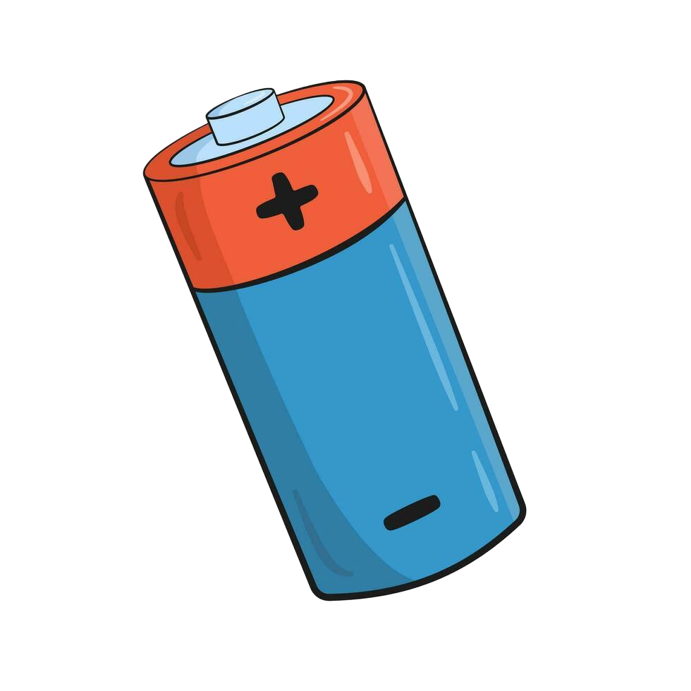
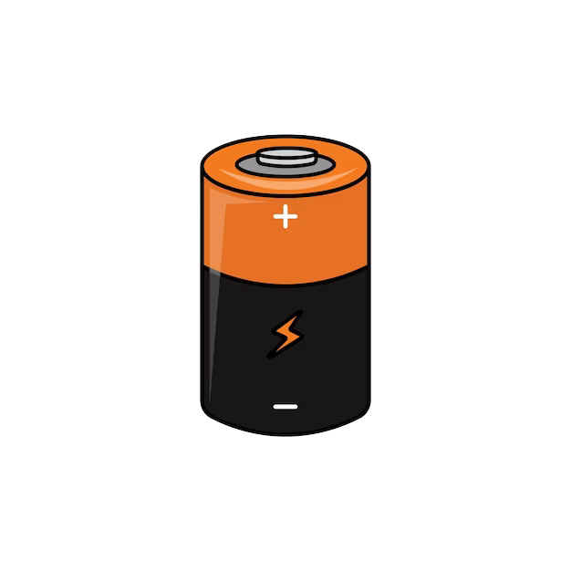
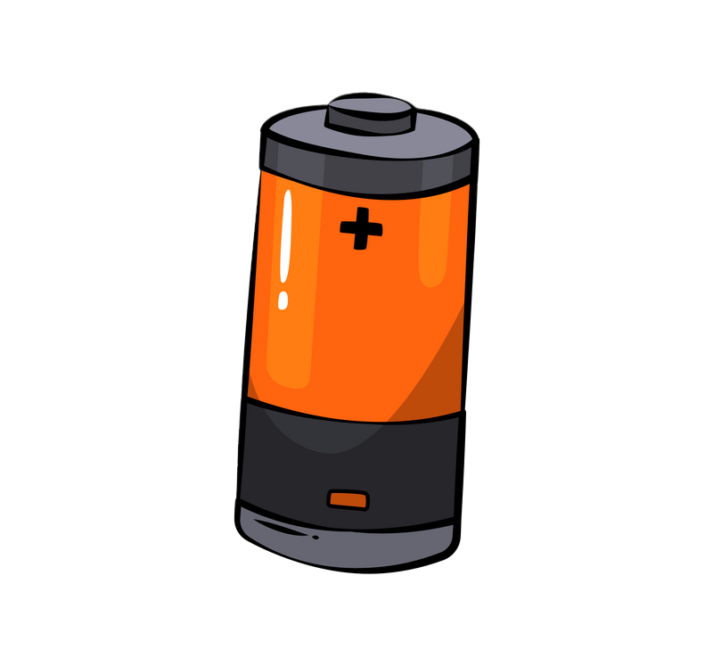
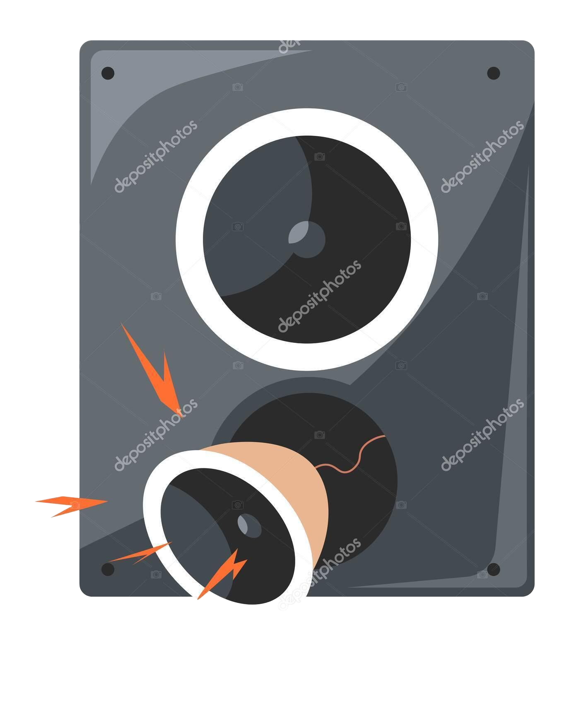
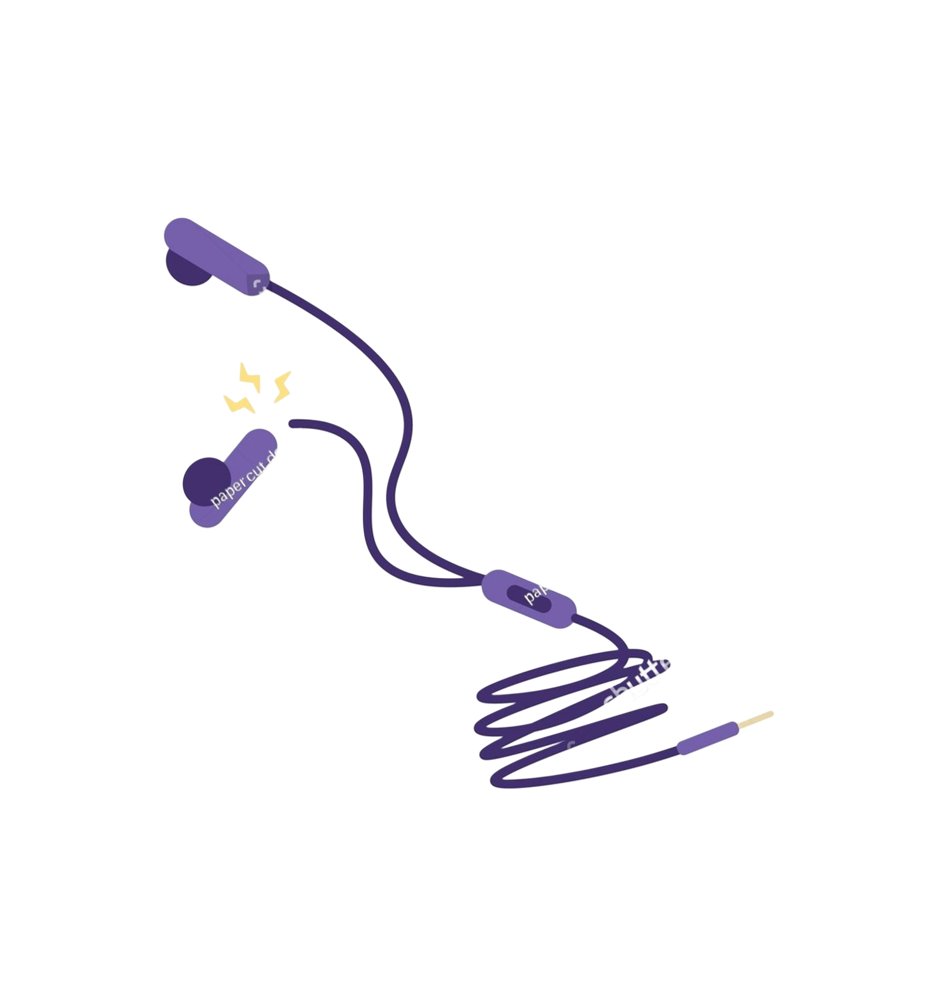
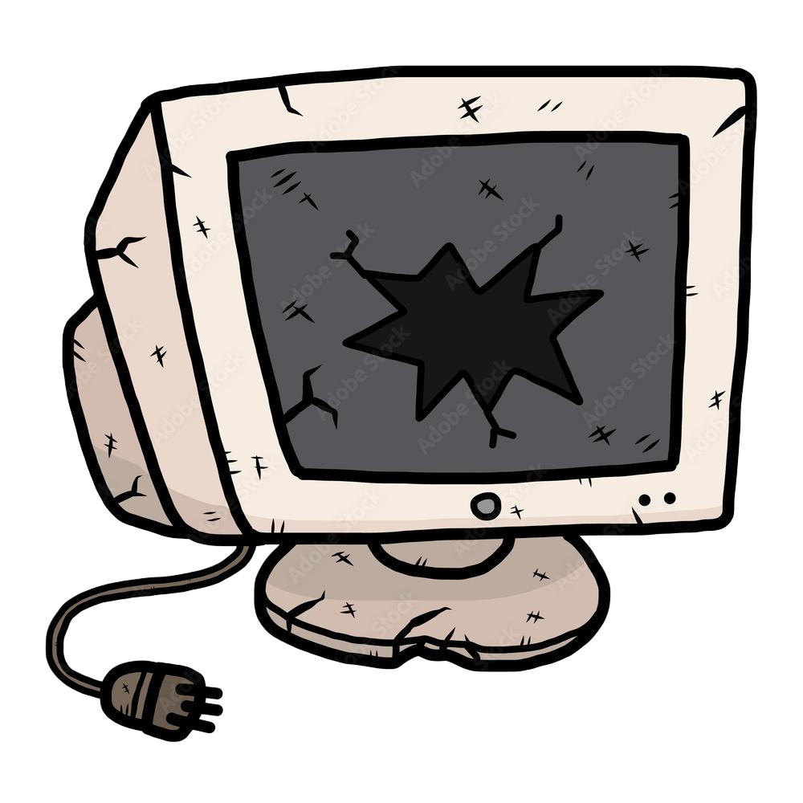
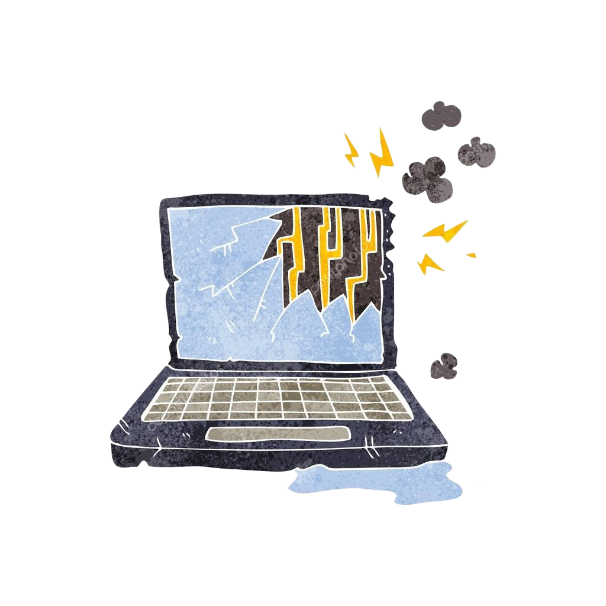
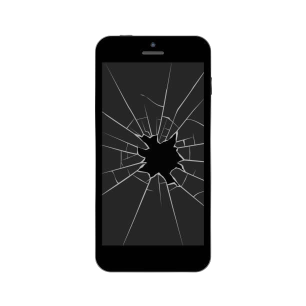
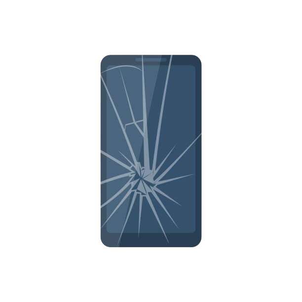
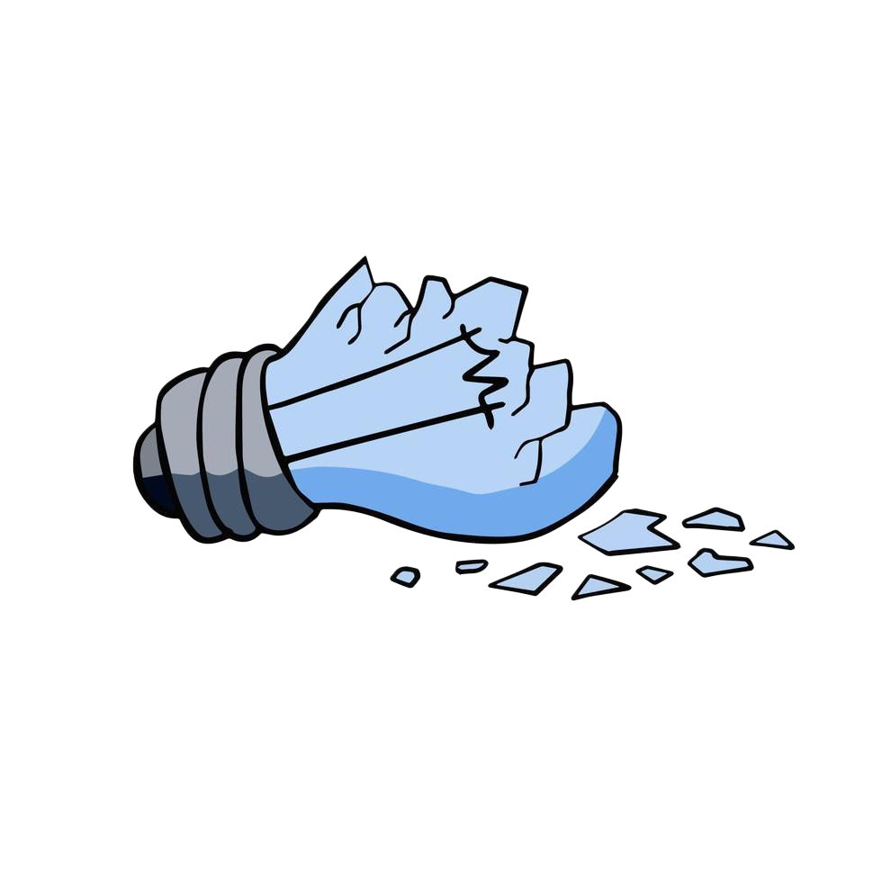
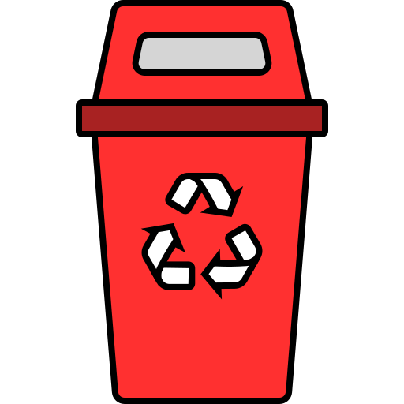
Pilhão (Pilhas) Lixo Eletrónico
Lixo Eletrónico

Chegámos ao quarto e há vários aparelhos eletrónicos estragados e pilhas gastas misturados com o lixo!
As pilhas contêm metais pesados muito perigosos e devem ir para o 🔴 Pilhão. Os eletrónicos avariados devem ir para a 📦 Caixa de Eletrónicos para serem entregues numa loja de reciclagem!











Pilhão (Pilhas)
Lixo Eletrónico